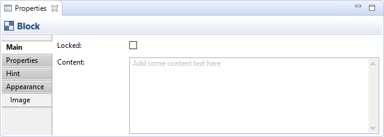
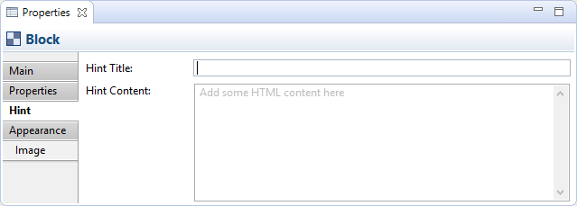
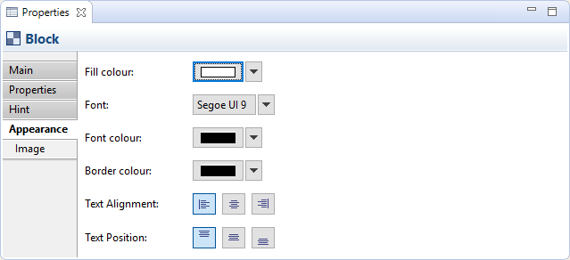
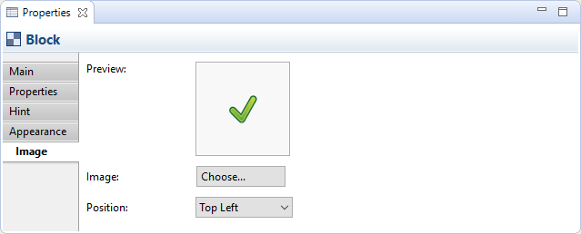

Un objet bloc est une zone conteneur qui peut contenir du texte et un icone. Vous pouvez également fournir vos propres astuces d'aide. Vous pouvez verrouiller le bloc si vous voulez le rendre en lecture seule. Un cas d'usage typique consiste à créer un certain nombre de blocs conteneurs sur le canevas, de les disposer selon l'agencement souhaité, de les verrouiller puis d'enregistrer le canevas en tant que modèle.
Propriétés
Sélectionner un bloc dans la vue du canevas signifie que vous pouvez modifier ou voir les propriétés suivantes dans la fenêtre des propriétés.
L'onglet principal
Propriétés principales pour un bloc de canevas
| Verrouillé: | Sélectionner ceci assure que le bloc ne peut être ni déplacé, ni modifié. |
| Contenu: | Un endroit pour saisir du texte pour le bloc. Le texte sera affiché dans le bloc. |
L'onglet propriétés
Pour plus d'informations concernant la création et la gestion des propriétés utilisateur, voir les propriétés utilisateur.
L'onglet des astuces
Les propriétés des astuces pour un bloc de canevas
| Titre de l'astuce: | Le titre de l'astuce à afficher dans la fenêtre des astuces quand le bloc est sélectionné. |
| Contenu de l'astuce: | Un endroit pour saisir le texte de l'astuce à afficher dans la fenêtre de l'astuce quand le bloc est sélectionné. Les balises HTML sont autorisées. |
L'onglet apparence
Les propriétés d'apparence pour le bloc du canevas
| Couleur de remplissage: | Définit la couleur de remplissage pour l'élément sélectionné. Le bouton "Défaut" définit la couleur de remplissage comme étant celle par défaut. |
| Police de caractères: | Définit la police de caractères utilisée pour le texte dans l'élément sélectionné. La bouton "Défaut" définit la police de caractères comme étant celle définie par défaut dans les préférences. |
| Couleur de la police de caractères: | Définit la couleur de la police de caractères utilisées pour le texte dans l'élément sélectionné. Le bouton "Défaut" fixe la couleur comme étant celle définie par défaut. |
| Couleur de bordure: | Définit la couleur de bordure utilisée pour l'élément sélectionné. Le bouton "Aucune" supprime la bordure de cet élément. |
| Alignement du texte: | Aligne le texte de l'élément sélectionné à gauche, au centre ou à droite. |
| Position du texte: | Aligne le texte de l'élément sélectionné en haut, au milieu ou en bas. |
L'onglet image
Propriétés de l'image pour un bloc canevas
| Aperçu: | Une image d'aperçu qui affiche comme l'image apparaîtra. Les images sont redimensionnées à une largeur et une hauteur maximum de 100 pixels. Double-cliquer sur la boîte d'aperçu va invoquer la fenêtre de dialogue du sélecteur d'image. Vous pouvez aussi glisser-déposer un fichier image de votre bureau sur la boîte d'aperçu. |
| Image: | Choisir une image pour l'élément ou effacer cette image. Voir ajouter des images aux éléments" pour plus de détails |
| Position: | Définit la position de l'image relativement à l'élément. |